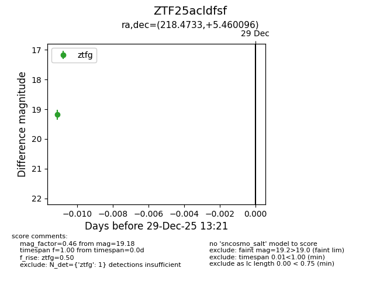
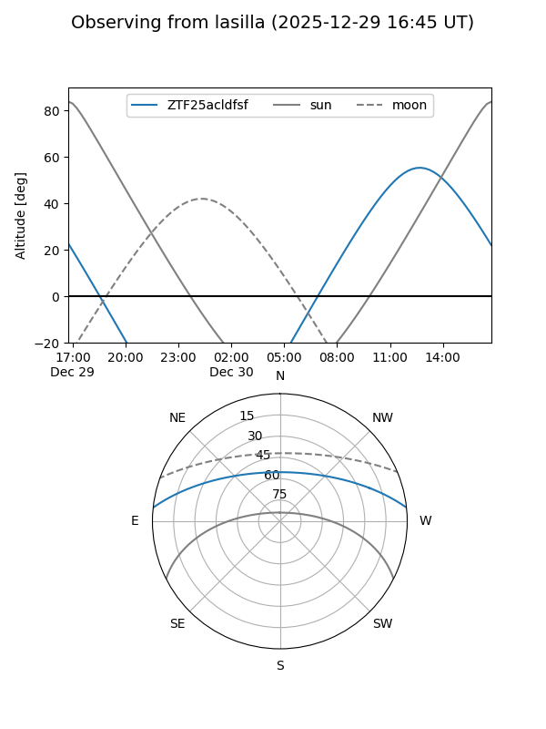
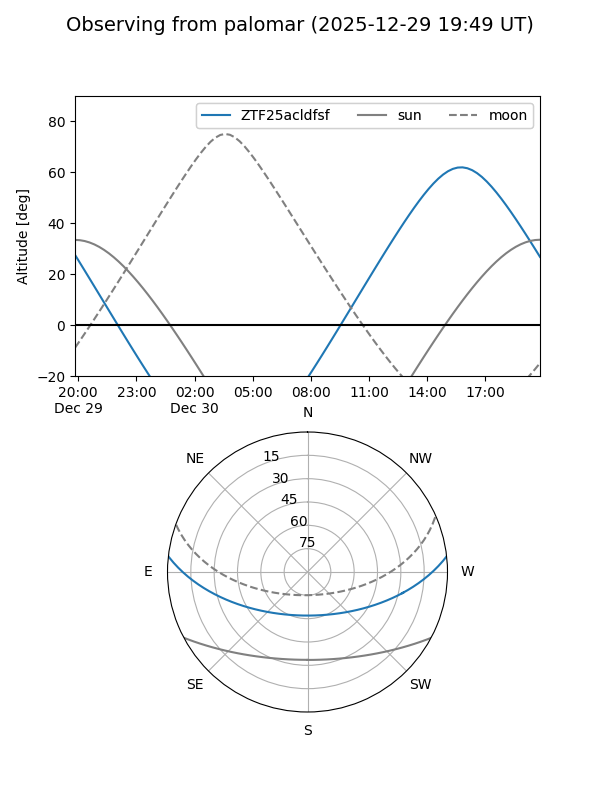

ZTF25acldfsf
Target ZTF25acldfsf at 2025-12-29 13:24
Aliases and brokers:
FINK: fink-portal.org/ZTF25acldfsf
Lasair: lasair-ztf.lsst.ac.uk/objects/ZTF25acldfsf
ALeRCE: alerce.online/object/ZTF25acldfsf
alt names
ZTF25acldfsf (ztf,fink_ztf)
Coordinates:
equatorial (ra, dec) = 218.4733,+5.46010
equatorial (HMS+DMS) = 14:33:53.59,+05:27:36.34
galactic (l, b) = (355.9032,+57.38106)
Flags:
Photometry:
last ztfg=19.18
1 ztfg detections
Lightcurve

Visibility


Additional plots